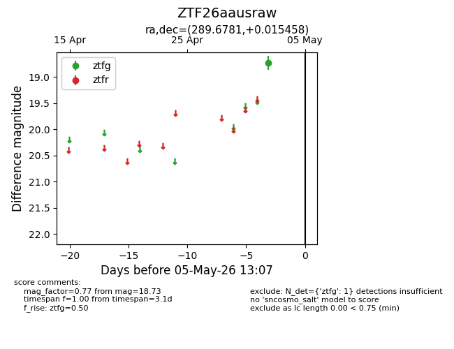
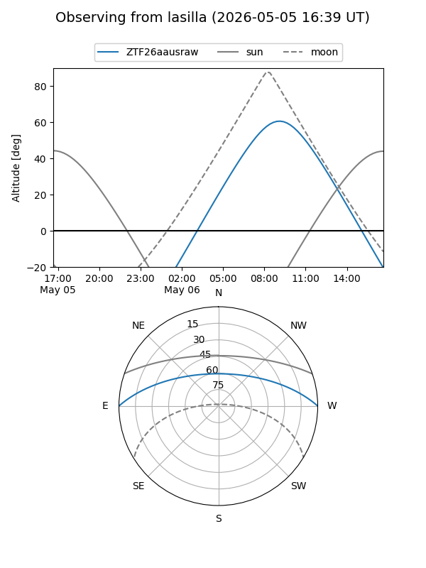
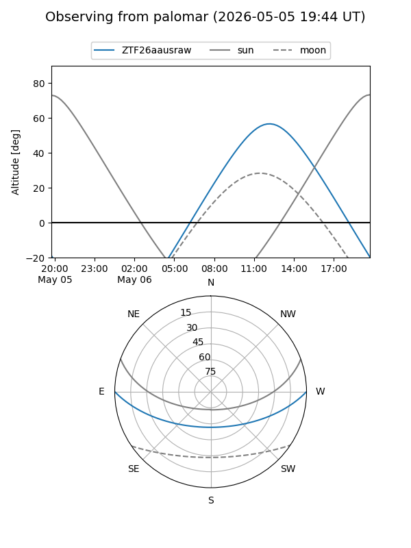

ZTF26aausraw
Target ZTF26aausraw at 2026-05-05 13:11
Aliases and brokers:
FINK: link
Lasair: link
ALeRCE: link
alt names
ZTF26aausraw (ztf,fink_ztf)
Coordinates:
equatorial (ra, dec) = 289.6781,+0.01546
equatorial (HMS+DMS) = 19:18:42.74,+00:00:55.65
galactic (l, b) = (36.0666,-6.05838)
Flags:
Photometry:
last ztfg=18.73
1 ztfg detections
Lightcurve

Visibility


Additional plots